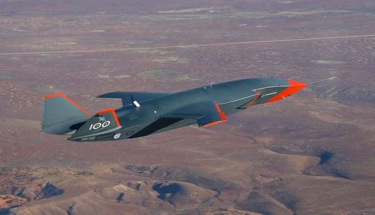
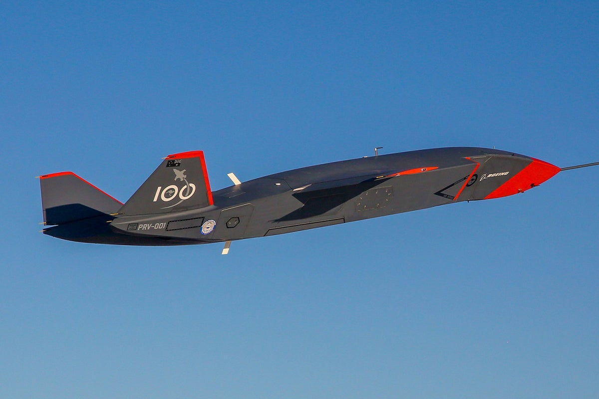

MQ-28A Ghost Bat: Engineering Modularity for Autonomous Airpower
The MQ-28A Ghost Bat is Boeing Australia's collaborative combat aircraft, designed to operate as an autonomous wingman alongside the F/A-18F Super Hornet and F-35A Lightning II. This takes a step towards one of Australia's most significant sovereign defence manufacturing programmes ever. But its real engineering significance lies not in the airframe itself, but in what the airframe is designed to carry.
The Ghost Bat's defining feature is its modular nose section: a compound, mission-specific, rapidly reconfigurable payload bay that transforms the aircraft into a groundbreaking system in minutes. This article examines the nose architecture as a design philosophy, why it matters for Australian defence capability, and its engineering trade-offs.

The modular nose as a design philosophy
Most combat aircraft are designed to be mission specific and operationally rigid. The sensor suite, electronic warfare package, and weapons integration are baked into the airframe from the outset, meaning reconfiguration takes months of physical labour. The Ghost Bat flips this approach entirely. Its nose section is designed to be swapped at the operational level, with different payloads for ISR, electronic warfare, or strike installable on the same airframe without heavy structural modification to the fuselage or wings.
This is not just maintenance convenience. It is strategic optimisation. A fleet of twenty Ghost Bats with five interchangeable nose configurations introduces mission flexibility that has rarely been seen on the battlefield. Logistically, aircraft technicians only need to stock wings, engines, landing gear, and more for one aircraft type, rather than multiple distinct supply warehouses. From a training standpoint, mechanics and pilots only need to learn one flight system and maintenance routine. Deployment, training, and maintenance become significantly more streamlined.
From an engineering perspective, this architecture demands standardised structural interfaces, plus power and data buses that accommodate payloads with fundamentally different electrical and thermal requirements. Regardless of which payload is installed, structural integrity of the airframe is maintained through a continuous load path through the nose section. The nose must carry an ISR sensor turret and a radar jammer with completely different mass distributions and centre of gravity positions, without requiring specific airframe reinforcements for each configuration.
SWaP constraints and autonomous compute
The modular nose also defines the power and thermal envelope available to each payload. The autonomous mission system, meaning the onboard AI that enables the Ghost Bat to operate within mission parameters independent of crew, requires compute hardware that generates heat, draws power, and occupies volume. These size, weight, and power (SWaP) constraints are not abstract. Every watt of thermal dissipation from an inference processor is a watt the airframe's cooling architecture must handle. Every kilogram of compute hardware has a direct effect on the available mass budget for sensors or weapons.
The primary engineering challenge is that different nose payloads impose different SWaP constraints on the same airframe. An electronic warfare jammer is thermally intensive but relatively light. A synthetic aperture radar is heavy and power-hungry. A strike payload is dense and inert until deployment, then radically changes the aircraft's mass distribution and CG position at the moment of release. The modular nose architecture must account for all of these parameters within a single standardised thermal management and power system.
This is where the Ghost Bat's design philosophy intersects with the broader trajectory of autonomous systems engineering. As mission systems grow more computationally intensive and onboard autonomy matures, the SWaP budget will scale relative to what is allocated to sensors and weapons. An airframe that accommodates this inherent shift without structural redesign is one that remains operationally relevant across a 20-year service life. The modular nose is Boeing Australia's answer to that problem.
Sovereign manufacturing and AUKUS alignment
The Ghost Bat is designed and manufactured by Boeing Defence Australia, with final assembly at the Wellcamp facility in Toowoomba, Queensland. This sovereign manufacturing posture is core to its strategic value, reducing dependence on critical foreign supply chains. Unlike imported platforms where Australia is merely a customer, the MQ-28A programme builds domestic engineering capability, workforce expertise, and supply chain depth in combat aircraft production.
Under AUKUS, the modular nose takes on additional strategic significance. A standardised payload interface designed and manufactured in Australia creates an architecture where allied nations can adapt their own EW and sensor requirements without airframe modifications. Australia develops into not only a platform operator, but a platform provider. This creates a meaningful contribution to coalition capability in the Indo-Pacific, enabling genuine interoperability between allied nations.
Crewed-uncrewed teaming and cost-per-effect
The Ghost Bat's autonomous mission management system enables critical decision making without the physical presence of a human operator. This crewed-uncrewed teaming concept allows a single crewed fighter to seamlessly coordinate with multiple autonomous wingmen, each carrying a different mission-specific modular nose configuration.
The economic argument flows directly from this modularity. Cost-per-effect rather than cost-per-unit becomes the relevant metric. A Ghost Bat costs roughly a third of a crewed fighter, but its modular nose means that each mission's utility is not fixed at procurement. As the threat environment evolves, the aircraft can be reconfigured for electronic warfare even if originally procured for ISR. This flexibility collapses the traditional pipeline of capability planning, procurement, and fielding into a logistics problem rather than a capital expenditure problem.
This has long-term structural effects on the National Defence Strategy. The ADF can scale autonomous airpower by acquiring airframes and nose modules on separate timelines and budgets, adapting fleet composition to emerging threats at a response speed no crewed-only force structure can match.